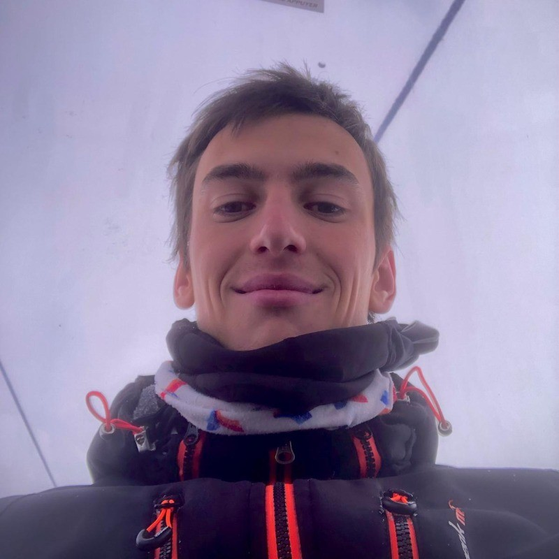

Alex Martí Guiu
💻 Data Scientist and Engineer
📍 Zürich (Switzerland)
about me!
Currently studying MSc Management, Technology and Economics at . Previously: Deep Learning Engineer for two years at Mediapro , Research Assistant at the LTS2 lab in École Polytechnique de Lausanne , 4-year BSc Data Science and Engineering at Universitat Politècnica de Catalunya .
Technical expertise:
- Programming languages: Python, R, SQL, C++, HTML, LaTeX.
- Libraries: PyTorch, TensorFlow, OpenCV, Pandas, NumPy, Matplotlib, SciPy.
- Data Science: Statistics, Regression (LMs, GLMs), Clustering, Graphs, Trees.
- Deep Learning: Computer Vision, NLP, Transformers, GANs, custom models.
- Software Engineering: Git, Jira, Agile, Docker, Flask, Kubernetes, AWS, Azure.
 Linkedin
Linkedin